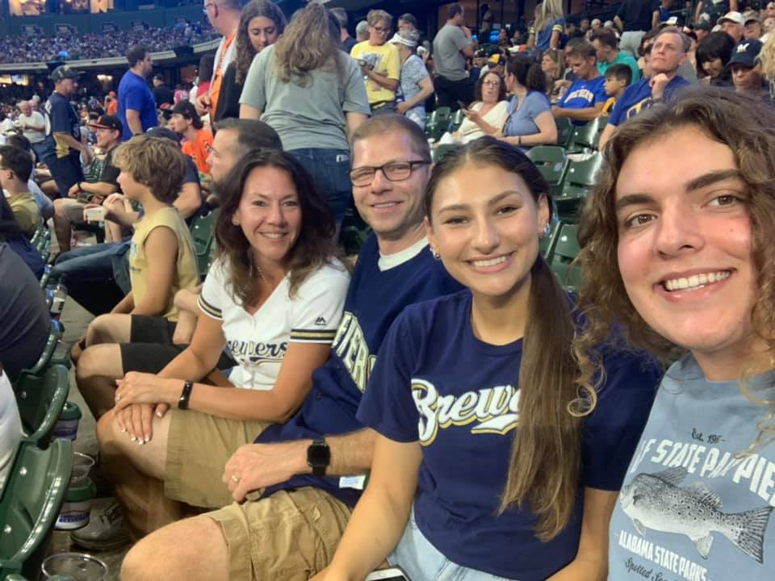
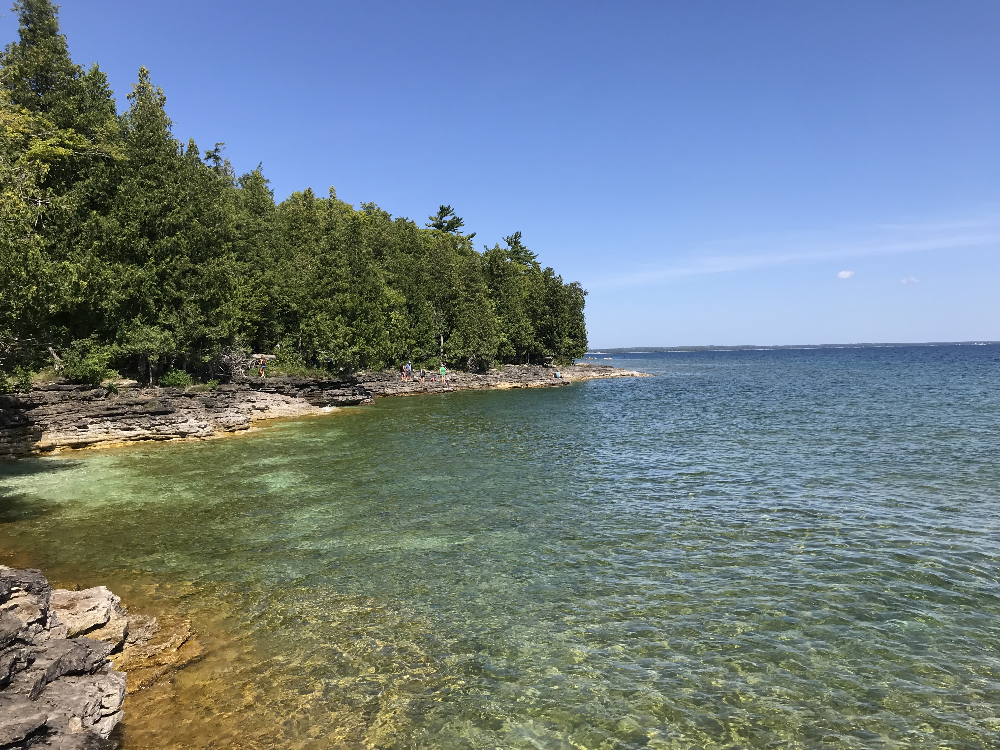

I love watching tv! My favorite shows are New Girl, Friends, The Vampire Diaries, The Sopranos, and Psych.
While I am not the most athletic, I love watching sports. My favorite teams are the Brewers, Packers, Bucks, and Badgers.

Currently I have been obsessed with playing candy crush and sudoku on my phone.
I love spending time hiking and doing activities outdoors. Last summer Kyle and I did a lot of hiking which was awesome. I took this lovely photo in Door County, WI.

I love going to UW-Madison and being a Badger. I find most of my classes to be very fulfilling and feel I learn real world skills. I also love the social environment on campus and sense of community, especially on game days.